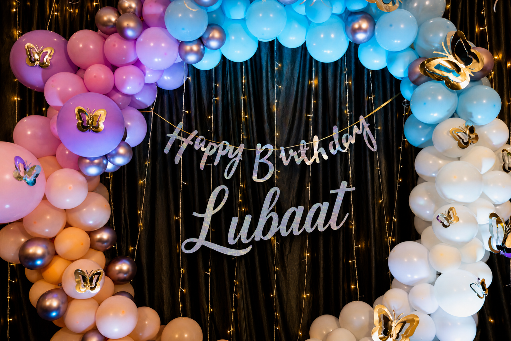
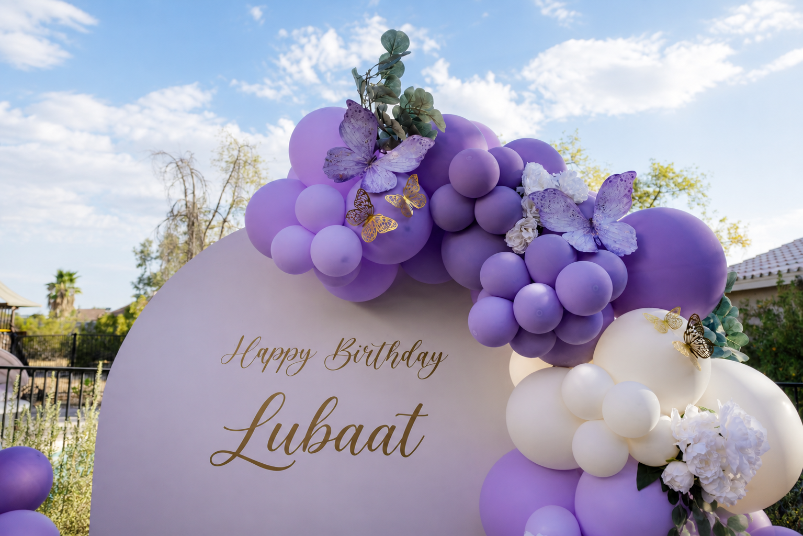
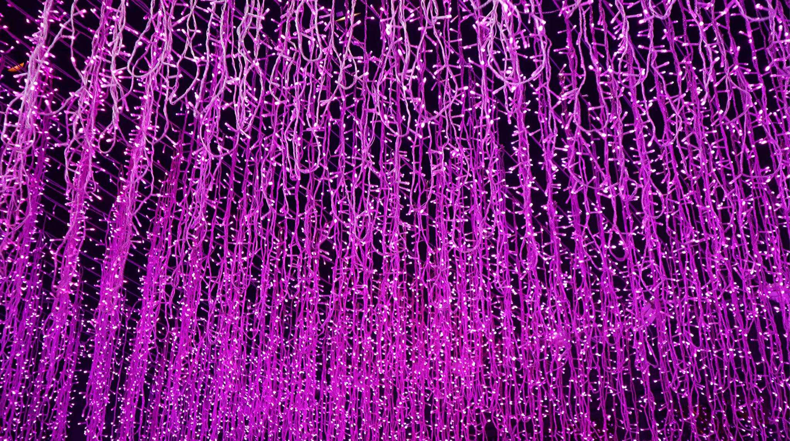
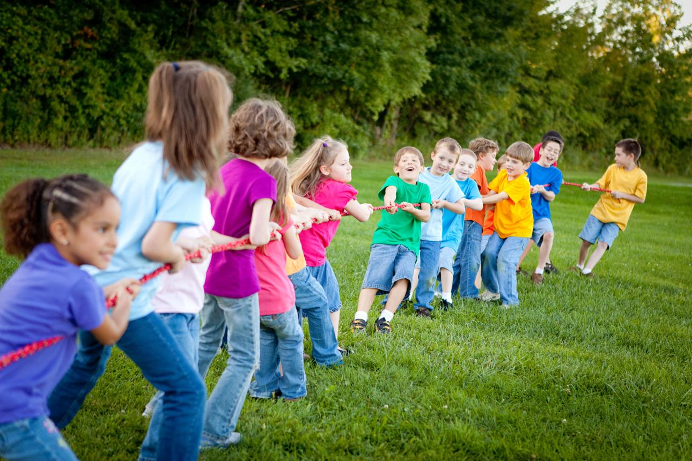
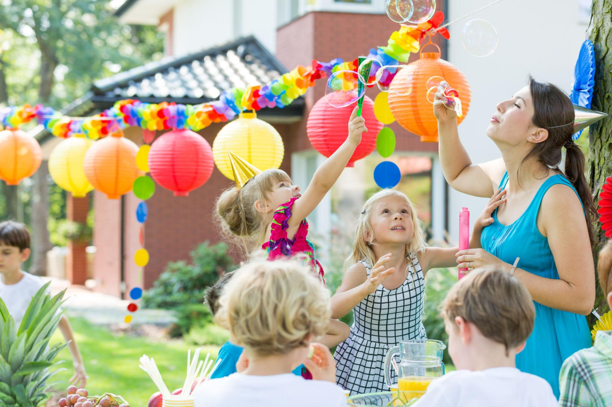
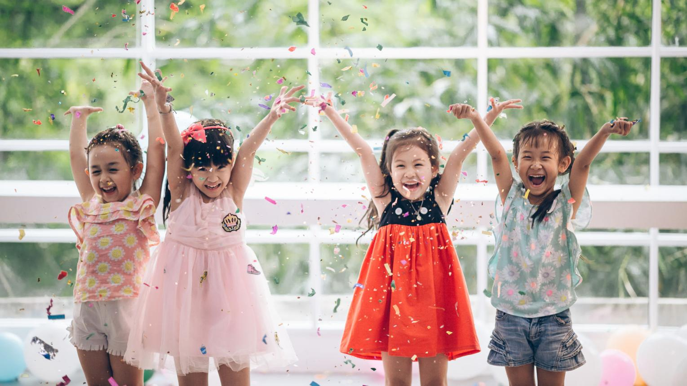

My Birthday Experience
🌌 What My Birthday Means to Me
To me, a birthday is not just a day to celebrate getting older. It feels more like a special moment in the year when I can pause and think about my life. I remember the memories I have made, the challenges I have faced, and the people who have stayed beside me.
Every birthday makes me feel grateful. It reminds me that life is not only about achievements, but also about the small happy moments. Even a simple smile or a kind wish from someone can make the day feel meaningful.
I believe birthdays are less about gifts and more about feelings. It is a time when I feel loved, appreciated, and connected to others.
🎈 The Celebration and Decoration



This year, my birthday was celebrated outdoors, which made it feel fresh and different from other years. As soon as I entered the place, the beautiful blue and lavender decorations caught my attention. The balloon arch at the entrance made the place look grand and welcoming.
There was a canopy set up where we gathered, and soft lights were hanging above. When evening came, those lights created a calm and magical feeling. The entire environment felt peaceful, yet joyful at the same time.
Instead of being too crowded or loud, everything was arranged in a simple and elegant way. It made the whole celebration feel more special and comfortable.
🌿 Children’s Activities and Fun Moments
✨ Tug of War

One of the most exciting parts of the day was watching the children play tug of war. They were divided into groups, and everyone was laughing, shouting, and trying their best to win. It was not about winning or losing, but about enjoying the moment together.
The energy of the game made the whole environment lively. Even those who were not playing were cheering and enjoying the scene.
🫧 Bubble Play

Another beautiful moment was when the children started playing with bubbles. The bubbles floated gently in the air, shining under the light. It looked like a dream, as if the whole place had turned magical.
That moment felt calm and peaceful, and it created a soft contrast with the excitement of the games.
🎉 The Most Joyful Moment

The most joyful moment of the celebration was when confetti was thrown into the air. Suddenly, the whole place was filled with colors, laughter, and excitement. Everyone was smiling, and the happiness in that moment felt real and unforgettable.
It was one of those rare moments where everything felt perfect.
🎂 The Cake – The Heart of the Celebration

The cake was the most beautiful part of the celebration. It had a galaxy theme with shades of blue and purple, along with musical designs. It looked so elegant that it almost felt like a piece of art.
When I stood in front of the cake, I felt a mix of happiness and excitement. It was not just about cutting the cake, but about enjoying that special moment with everyone around me.
That moment is something I will always remember.
💭 My Final Thoughts
At the end of the day, I realized that a birthday is not about how big or expensive the celebration is. It is about how it makes me feel. This birthday gave me happiness, peace, and beautiful memories.
The laughter of children, the beauty of the decorations, and the warmth of the environment made everything perfect. It was simple, yet meaningful.
This birthday was not just a celebration… it was a memory that will stay with me forever.